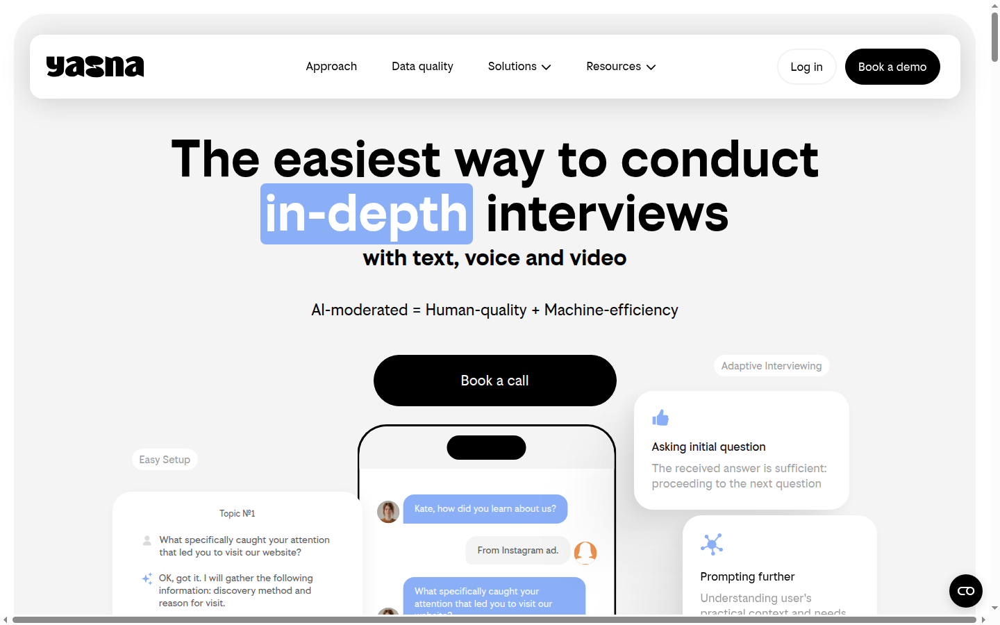

Scaler l'interview sans embaucher de modérateurs
Une interview qualitative donne des verbatims riches mais coûte cher : un modérateur humain, une session à la fois. Yasna confie la modération à une IA qui peut mener des centaines de conversations en parallèle — chacune en langue native du répondant.
Brief de recherche → interview IA → synthèse
On définit les objectifs, les questions clés et les zones à creuser — comme un brief à un modérateur humain. On peut joindre du texte, des images, des vidéos ou des maquettes à faire tester. Yasna mène alors les conversations (texte, voix, ou vidéo), relance, clarifie. À la fin, les transcriptions sont transformées en résumés structurés, thèmes, et quantifications.
Recrutement — diffusion via votre CRM ou accès intégré à des panels en ligne dans 60+ pays. Screening IA pour ne garder que la cible visée.
Interface
Capture de la page d'accueil — yasna.ai.

Lecture objective
Pour
- Modération IA en 45+ langues (français inclus).
- Parallélisation : des centaines d'interviews / jour.
- Pricing public et transparent.
- Synthèse automatique (thèmes, findings, quanti).
- Recrutement panels dans 60+ pays intégré.
Contre
- Une IA ne remplace pas un modérateur expert sur sujets sensibles ou complexes.
- Qualité des réponses dépend du brief initial.
- Code fermé, pas de self-host.
- Offre encore jeune, écosystème d'intégrations en construction.
Tarification publique
Payant — à partir de 150 € / mois, grille transparente publiée sur le site (une des rares du segment).